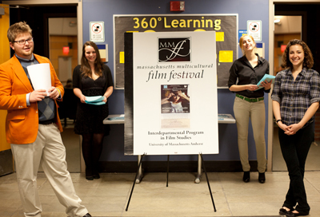

INTERNSHIPS AND JOBS
UMass Adjunct Appointment in Contemporary Film History
Posted: 10/11/2012
The Department of Communication at UMass Amherst is seeking an instructor to teach History of Film II (COMM 342) during the Spring 2013 semester. This is a non-tenure-stream, non-benefited, adjunct appointment for an instructor with PhD in hand, though renewal is a possibility. The course covers the development of international cinema from approximately 1950 to the present, and is scheduled to be offered on Tuesdays and Thursdays, 1:00–2:15 p.m. beginning Tuesday, January 22, with an out-of-class screening on Thursdays 4:00–6:00 p.m. (The screening can be staffed by a Teaching or Lab Assistant.) Enrollment is capped at 150, and the instructor will have Teaching Assistant support for grading and general duties, though no sections are assigned. Compensation is above the usual per-course rate, given high enrollment.
If you are interested or know of a qualified colleague who might be, please contact Lisa Henderson, Chair, Department of Communication at lhender@comm.umass.edu or (413) 545-6339.
2012-2013 Paid Internships in Jewish Oral History
students interested in Jewish studies, Anthropology, Oral History, or Film Studies to apply for this paid internship opportunity.
The Yiddish Book Center’s Wexler Oral History Project is seeking three paid interns for the 2012-2013 academic year to help process over 200 video oral history interviews. Interns will work at the Book Center, located on the Hampshire College campus, between 10-15 hours per week.
The Wexler Oral History Project is a growing collection of over 200 in-depth video interviews with people of all ages, exploring Yiddish cultural topics and issues of modern Jewish identity. We are particularly interested in how Yiddish language and culture inform Jewish identity, and how they, along with Jewish values and practices, are transmitted across generations.
The internship has two tracks: interns will work primarily on either the technical aspects of the project (editing and uploading video footage of interviews) or on the cultural content (time-coding full-length interviews, identifying interesting clips, and curating video material to make it more accessible to viewers in our online archive). Applicants with a strong background in both film editing and Jewish history and culture will be able to work on both aspects of the project. Interns will work closely with the Project Director, an oral history Fellow, and other volunteers involved in the project.
TECHNICAL INTERN
Job Description:
▪ Editing, preparing, exporting, and uploading full interviews and excerpts using Final Cut Pro (professional video editing program)
Requirements:
▪ Video-editing experience, preferably on Final Cut Pro 7
▪ Comfort with technology
▪ Interest in learning new software/applications
▪ Interest in oral history/ethnography/Jewish culture
▪ Attention to detail
▪ Excellent listening skills
▪ Ability to work independently, with low-level supervision
CULTURAL INTERN
Job Description:
▪ Identifying great stories and excerpts of interviews for use in web, print, and other outlets using Final Cut Pro (professional video editing program)
▪ Tracking interviews and post-interview processing in the project’s customized FileMaker Pro database
Requirements:
▪ Jewish studies background (or familiarity with modern Jewish and Yiddish culture and history)
▪ Interest in oral history/ethnography
▪ Comfort with technology
▪ Interest in learning new software/applications*
▪ Attention to detail
▪ Excellent listening skills
▪ Ability to update and maintain integrated tracking system for a complex workflow and expansive project
▪ Ability to work independently, with low-level supervision
*Note: Cultural interns will receive basic training on Final Cut Pro video editing software.
Hours: Interns must work a minimum of 10 hours per week. Schedule negotiable during weekday daytime hours.
Work study students preferred. Possibility for continued employment through summer 2013.
To apply, send cover letter and resume to Project Director Christa Whitney at tellyourstory@bikher.org as soon as possible. Applications will be processed on a rolling basis.
Watch excerpts and learn more about the Wexler Oral History Project online: yiddishbookcenter.org/tell-your-story. For more information, contact tellyourstory@bikher.org.
For full job listing: yiddishbookcenter.org/internship-jewish-oral-history
New England Film looking for Production Assistants
We are producing an independent feature around Mid Vermont, wrapping shooting June 18-30, and we're looking for some motivated, hard-working production assistants. We can offer housing, food, expense coverage and credit.
Film info:
Shakespeare's Daughter
Eugene Devlin, a once famous, now reclusive poet, searches through his past, looking for redemption and peace.
Cast: Bonnie Wright - "Phoebe"
David Warner - "Eugene"
Campbell Scott - "Young Eugene"
Tom Sizemore - "Randy"
Eric Roberts - "David"
Sasha Spielberg - "Rachel"
Cynthia Gibb - "Caroline" J
amie Bamber - "Paul"
Chevy Chase - "Gravedigger"
Contact:
Billy Sharff
Elemental Cinema
bsharff@elementalcinema.com
(603) 477-9669
www.elementalcinema.com
UMASS INTERNSHIPS
Interdepartmental Program in Film Studies - Fall Internship
Each fall, the UMASS Interdepartmental Program in Film Studies seeks energetic, detail-oriented, creative, dedicated film students with excellent communication skills for internship (3 credit/8 hrs per week preferred)
Responsibilities may include: film festival preparation; film education and career opportunities research; program promotion and data gathering; newsletter; film event promotion and support. Interns will have many opportunities to utilize and improve upon their writing, research, public speaking, technical, organizational and leadership skills through independent and collaborative work.
Interns must be enrolled in the Undergraduate Film Studies Certificate program. For more information or to arrange an interview, contact Barry Spence at the Film Studies office:
phone: (413) 545-3659
email: filmstudies@hfa.umass.edu
Current resume required!
Massachusetts Multicultural Film Festival - Film Studies Spring Internship
Interns will assist in the organization and implementation of the Massachusetts Multicultural Film Festival, with a primary focus on publicity. Intern duties may include: participation in initial Festival press campaign, including contacting local radio, television, and print media, as well as organizing publicity on campus, among the Five Colleges, and within the Pioneer Valley; coordination of weekly Festival publicity, including: design, production, and distribution of individual event posters; researching and contacting appropriate target audiences for individual events; library and archival research for compilation of film notes and documentation for Festival events; web design and graphic design; event-planning; filmmaker and guest visit coordination, and staffing of events. Interns will work closely with Festival staff and will have many opportunities to demonstrate and develop initiative and leadership skills through independent and team projects. Interns will complete regular progress reports.
Interns are usually contracted for one 3-credit Internship (working eight hours per week) for the duration of the spring semester. In addition, interns are expected to staff all events of the Massachusetts Multicultural Film Festival. Most events will take place 7:00- 10:00 p.m. Wednesdays, with some exceptions; some events will take place at the Five Colleges. Interns are expected to assist with preparation and clean-up before and after each event, and will serve as greeters and perform other activities associated with staffing each event. Interns may also participate in additional Festival activities including filmmaker and scholar dinners/receptions.
In any of these capacities, students have the opportunity to gain valuable experience in assisting the Interdepartmental Program in Film Studies in festival curating and public relations, while earning supervised academic credit for their activities. The Massachusetts Multicultural Film Festival as a whole represents a valuable educational opportunity for undergraduate and graduate students who will be able to interact directly with a diverse cross-section of film artists and scholars from around the world.
Interns must be enrolled in the Undergraduate Film Studies Certificate program. In the fall semester, please submit a letter of interest along with a current resume to:
The Interdepartmental Program in Film Studies
129 Herter Annex
University of Massachusetts Amherst
For more information, contact Barry Spence in the Film Studies office:
413-545-3659
filmstudies@hfa.umass.edu
LOCAL INTERNSHIPS
Pioneer Valley Jewish Film Festival Internship
The Pioneer Valley Jewish Film Festival is celebrated each spring. The intern is part of a small team that collaborates with numerous partner organizations to mount an annual 2-week spring festival in 3 counties in the Pioneer Valley of Western Massachusetts. The Festival brings hard-to-find Jewish-related films to a diverse audience including those with an interest in Jewish culture, history, politics and identity, and anyone seeking entertainment, education, and insight beyond mainstream cinema offerings.
Working in a non-profit foundation, the intern uses skills in project management, public relations, and marketing. Being creative and pro-active in targeting new audiences (reaching out to organizations and individuals who can connect their constituents with our festival) is central to the work of the intern.
This internship provides the chance to learn about Jewish identity, the local & global Jewish community, interfaith and intercultural issues, as well as to learn first-hand the art and business of running a film festival. Interns have the opportunity to screen (at home) internationally acclaimed films not often found in mainstream theatres.
Requirements
Interest in Jewish culture; excellent organizational, internet, writing & computer skills; strong interest in developing marketing skills; ability and desire to think creatively and take initiative, as well as to work as part of a team; a good sense of humor; and flexibility. College junior or senior preferred. Time Commitment: 5 hours/week. Ideal candidate would be available January through April, but intersession or spring semester placements are considered, as well. Location: West Springfield, MA. Some work can be done remotely.
How to Apply
Send resume, cover letter and names of 2 references to: janet@hgf.org.
The Media Education Foundation Internships
Intern and volunteer positions with the Media Education Foundation are structured around the college semester system. Positions are available for Spring, Summer, and Fall in both Production and Marketing/Administration. Internships and volunteer positions are unpaid, but we do offer credit for currently enrolled students.
Qualifications
Interns should understand and be comfortable with the nature of MEF's work providing hard-hitting, progressive media criticism and scholarship in an accessible format and language through video. They should also be comfortable working in an atmosphere where media images representing extreme violence and sexual imagery are sometimes part of the picture. Interns should also be computer savvy in basic programs and Internet savvy, since more and more research requires on-line searching. Previous video production experience or course work is not absolutely required, but it can be useful in getting the most out of the internship.
For work in the marketing aspects, some experience or course work in that area, and Internet savvy is useful. A successful intern is a self-starter who takes the internship as seriously as they would any new job and tackles each assignment with initiative, imagination, energy, and determination.
How to Apply
Other than taking care of the University or college's requirements for securing credit for the internship, applicants should send the following:
- A cover letter explaining your interest in the internship, how you learned of it, and its relevance to your academic work or vocational plans.
- A resume.
- An unofficial transcript.
- Send to:
Barbara Murphy-Malinak, Personnel Director
Media Education Foundation
26 Center Street
Northampton, MA 01060
(413) 584-8500
Call with any questions or e-mail to barbara@mediaed.org. In most cases, an interview will be conducted.
National and International
Cannes Film Festival, the Venice Film Festival, and the L.A. Intensive
 Each year Walter Harris, the director of the American Pavilion Student Filmmaker Internship Program at the Cannes Film Festival, visits the Five Colleges to present information sessions to students about the American Pavilion’s three main student programs: the Cannes Film Festival, the Venice Film Festival, and the L.A. Intensive program.
Each year Walter Harris, the director of the American Pavilion Student Filmmaker Internship Program at the Cannes Film Festival, visits the Five Colleges to present information sessions to students about the American Pavilion’s three main student programs: the Cannes Film Festival, the Venice Film Festival, and the L.A. Intensive program.
Since 2004, Film Studies has sent some 35 students from the Five Colleges to the Cannes Internship and have received terrific feedback from them about the experience. A number of our students have also participated in the L.A. Intensive and the Venice Film Festival programs with equally positive results.
For more information on the internship program and how to apply, visit www.ampav.com.
Academy of Television Arts & Sciences Summer Internship
The television Academy Foundation’s summer Student Internship Program provides more than 40 industry-wide internships to college and graduate students from across the country, and has been hailed for more than a decade as one of the top ten internships in the country.
The program is designed to provide college students with in-depth exposure to professional television production during an eight-week summer period in Los Angeles.
See the Academy of Television Arts & Sciences web site for more info and instructions on how to apply.
If you have questions or need further information, please contact internsupport@emmys.org